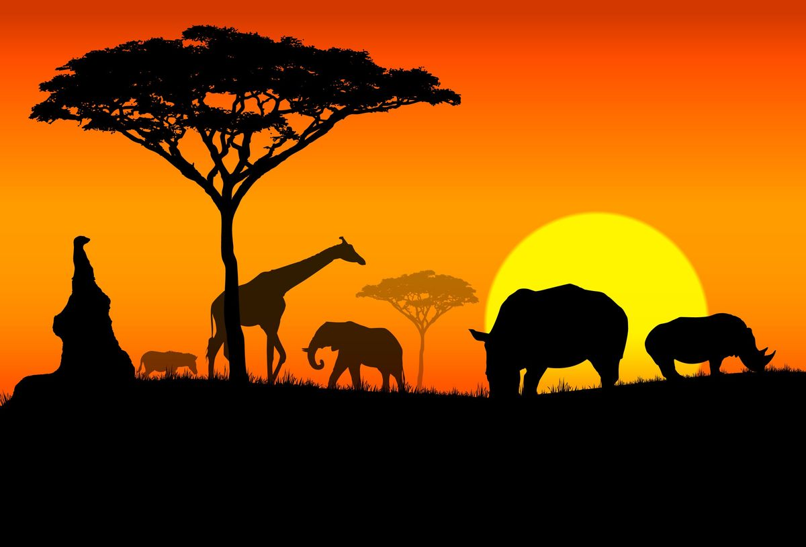

Игры по континентам
Путешествие по игровым традициям разных регионов
Азия
Колыбель стратегических игр
Азия подарила миру величайшие стратегические игры: Го, сёги, маджонг, пачиси. Здесь игры часто связаны с философией, медитацией и развитием ума. В Китае, Японии и Корее игры существуют тысячелетиями и являются частью культурного кода.
Популярные игры:
- Го (Китай) — стратегическая игра, требующая интуиции
- Сёги (Япония) — японские шахматы с уникальными правилами
- Маджонг (Китай) — игра с костями, требующая внимания
- Пачиси (Индия) — предок современных игр-бродилок

Африка
Игры пустыни и саванны
Африканские игры часто связаны с сельским хозяйством и собирательством. Самый известный тип — манкала, игры с перемещением семян по лункам. Древний Египет подарил миру сенет — игру с религиозным значением, путь в загробный мир.
Популярные игры:
- Манкала — семейство игр с перемещением семян
- Сенет (Египет) — древнейшая настольная игра
- Бао (Восточная Африка) — сложная версия манкалы
- Мехен (Египет) — игра в форме змеи
Европа
Средневековые стратегии
Европейские игры часто отражают военную тактику и социальную иерархию средневековья. Шахматы, пришедшие из Индии, стали королевской игрой. Викинги играли в хнефатафл, моделирующий военные сражения.
Популярные игры:
- Шахматы — королевская игра, символ стратегии
- Хнефатафл (Скандинавия) — игра викингов
- Тавлеи (Русь) — славянская версия тафла
- Нарды — одна из древнейших игр
Америка
Игры доколумбовых цивилизаций
Игры коренных народов Америки часто имели ритуальное значение. Ацтеки играли в патолли, майя — в пука. Мезоамериканские игры отражали космологию и религиозные представления.
Популярные игры:
- Патолли (ацтеки) — игра с ритуальным значением
- Пука (майя) — игра с бобами
- Тлачтли — мезоамериканская игра в мяч
- Чанки (индейцы) — игра с камнем и копьями